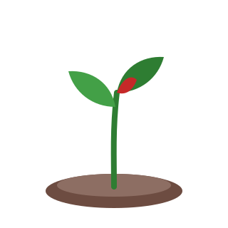

Fehler 404
Hier wächst leider nichts!
Diese Seite gibt es nicht (mehr). Vielleicht ist die Adresse falsch oder die Seite wurde verschoben. Mit diesen Links findest du zurück:

Fehler 404
Diese Seite gibt es nicht (mehr). Vielleicht ist die Adresse falsch oder die Seite wurde verschoben. Mit diesen Links findest du zurück:
